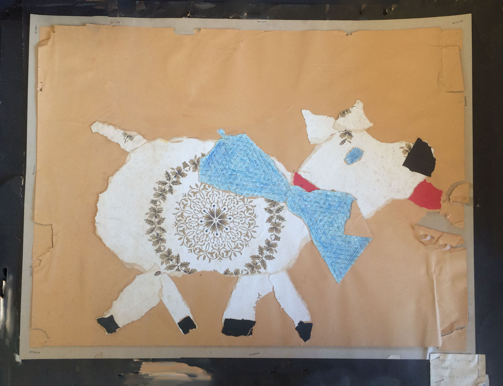
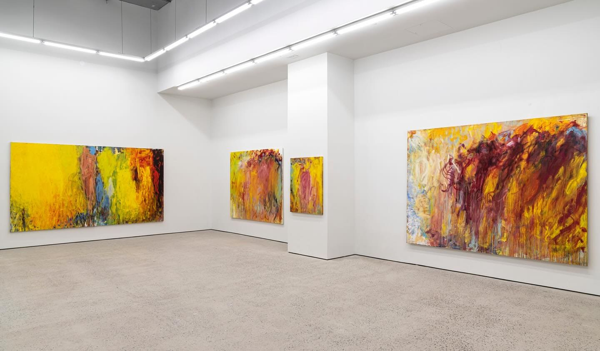
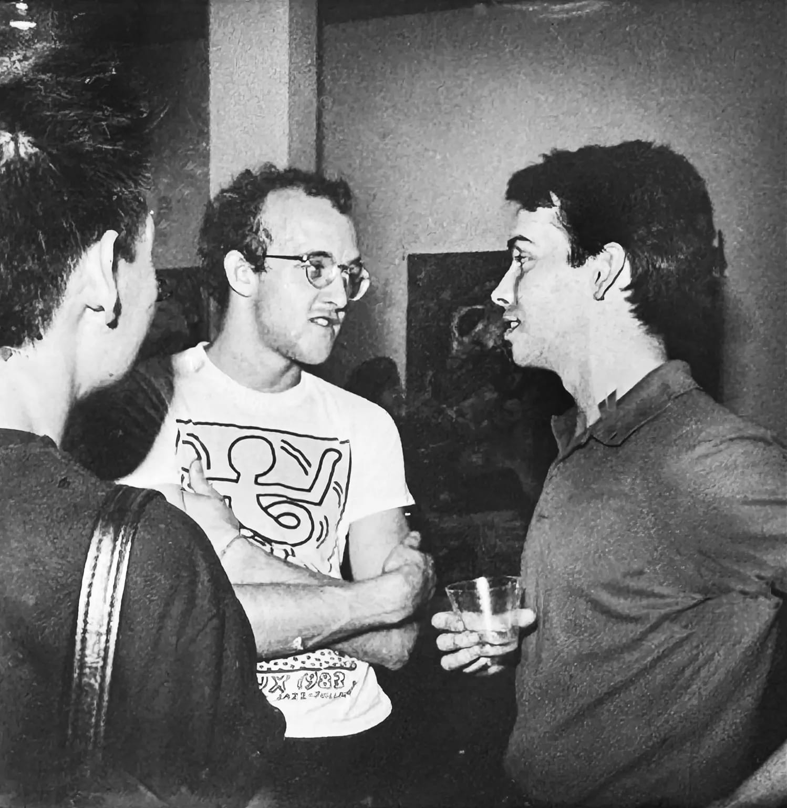
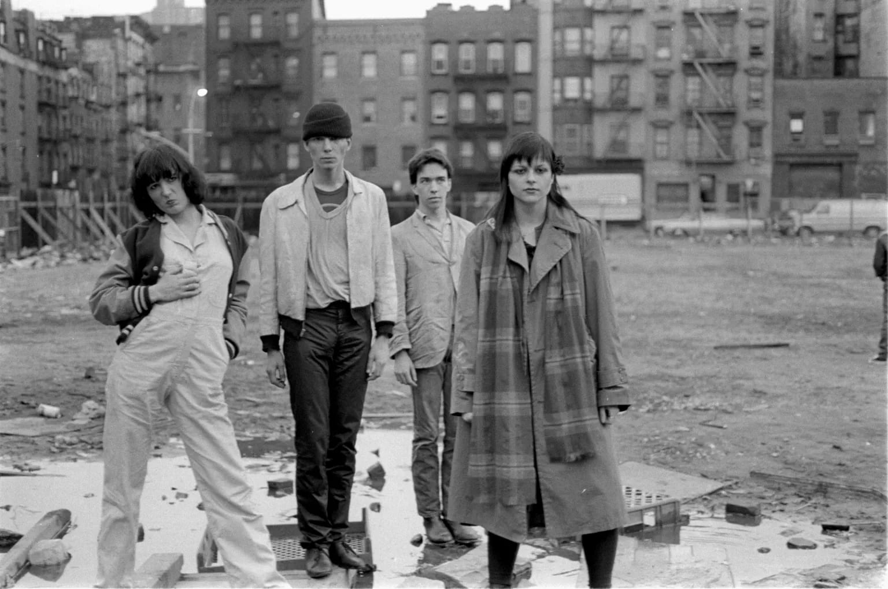
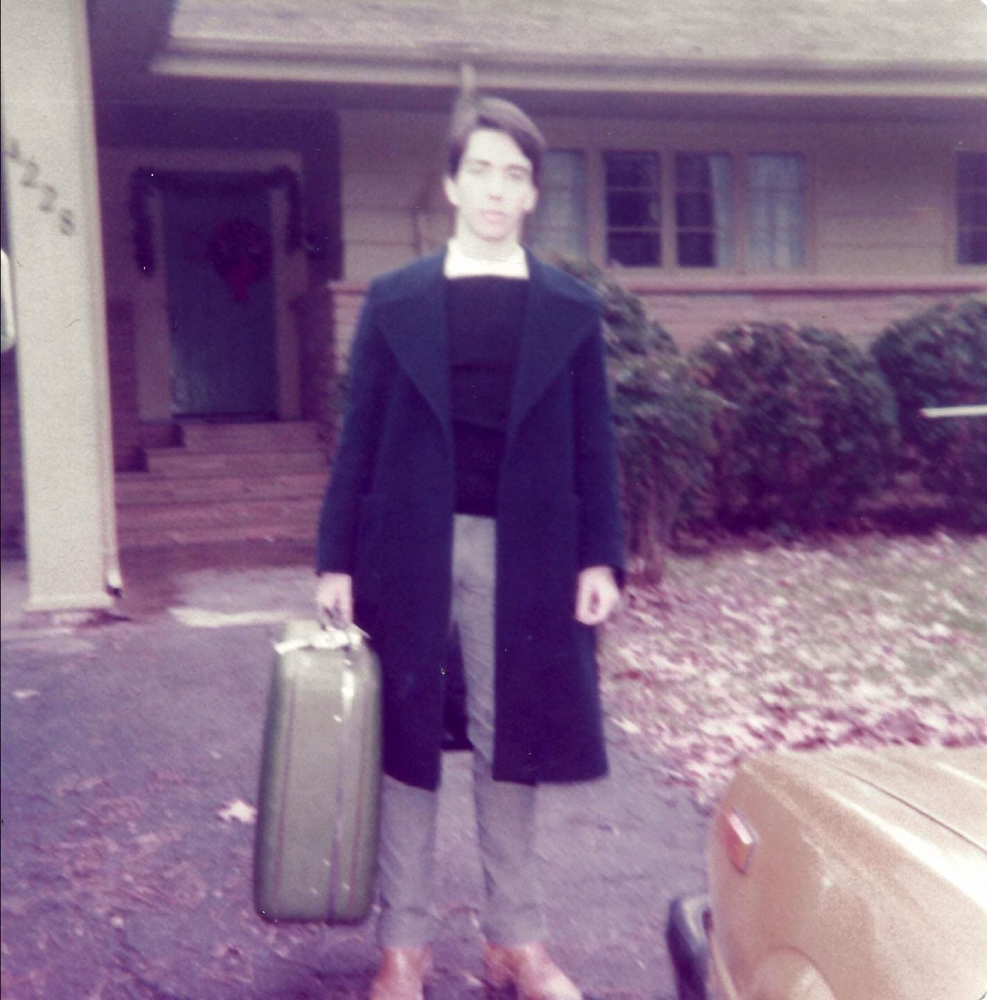

Frank Holliday
I’m Frank Holliday. I’m an artist and teacher at Parsons. I’m an actor and I’m a writer. That’s who I am. I’m all the above.
THE TRIP THAT MADE AN ARTIST
I went to the Museum of Modern Art on LSD when I was 15 years old, and that’s when I decided I wanted to be an artist.
I went in there and really identified with what these people were doing because I felt like we spoke the same language.
I learned at a very early age that I could get attention. My father would always beat my mother. She was always bruised. I found that I could make drawings and it would make her happy. It was a healing process. I would draw and say “Look, Mommy,” she was struggling and it just made her so happy.
In second grade, I made a collage of my dog Sam and they sent it away and everybody got their things back but mine didn't come back. I was like, “You lost mine!” But it won an award. It made me go, "Oh, maybe there's something here." I was young and I got approval for something.
I learned at a very early age that I could get attention. My father would always beat my mother. She was always bruised. I found that I could make drawings and it would make her happy. It was a healing process. I would draw and say “Look, Mommy,” she was struggling and it just made her so happy.

Frank's collage of Sam
FILLING THE WELL
It’s natural to feel burned out. What they call “filling the well” is when you're putting work out, you're emptying it out and that's when the block comes. When you have the block, you have to fill the well by going and looking at something beautiful, like taking an artist's date.
An artist's date is where you go out and it's just for your inner artist. You look at stuff and fill the well so you have new information to empty out. Take a walk, go see art, go see dance.
I had to realize that being an artist is being a human being, it's not being a machine. I can't just turn it on and off. I'll have a big show where I worked so hard, then you go back to the studio and you're not at this level anymore. You have to start again and then build back up to the next show.
You have to throw something to break it. These problems are real, but it's not going to last forever. You're gonna grow into yourself as an artist and don't expect the artist inside of you to be a genius 24 hours a day, let them be funky and rebellious. Treat your artist carefully so that you can have the bravery to say “fuck it, I'm going to do this.” Take risks. That's how you make progress.
An artist's date is where you go out and it's just for your inner artist. You look at stuff and fill the well so you have new information to empty out. Take a walk, go see art, go see dance.
I had to realize that being an artist is being a human being, it's not being a machine. I can't just turn it on and off. I'll have a big show where I worked so hard, then you go back to the studio and you're not at this level anymore. You have to start again and then build back up to the next show.

Frank's solo exhibition: "Wish You Were Here" @ Swivel Gallery
THE DOWNTOWN 54
The late '70s and '80s was all about clubs and nightlife.
Stanley, this Polish guy said, "We have this place on St. Mark's Place”. It was in the basement of a Polish church. We went down there, painted it black, and opened Club 57. We didn't even have a liquor license. We rented it out for $25 a night. Keith and I charged 25 cents to get in our show because we wanted to buy some pot. [Laughs]
Do you know where Irving Plaza is? We started that. I was the stage manager. We were working at Irving Plaza on weekends and Club 57 on weekdays. At one point, we took all the statues from the church downstairs and had our own revival. The art world would not let us in, so we said, "Fuck you, we'll just do it ourselves." We named it Club 57 as a joke. Studio 54 was the glamorous club. We made a joke that Club 57 was the downtown version of Studio 54.
Every night was a different thing. The guys that did Hairspray came out of Club 57. They were my friends and my musical director. Madonna was there. People did the Barbie musical, they did Trojan Women. My boyfriend, Henry Post, put a listing in New York Magazine and exposed the club. All of a sudden it was popular. We had lines here on the block.
If I had known that you could get super famous, I would have done it. You can't count yourself out of being successful. You have to understand that somebody has to be successful so it might as well fucking be you. I didn't know that Madonna was gonna be Madonna. I thought she was just a bitch.
Stanley, this Polish guy said, "We have this place on St. Mark's Place”. It was in the basement of a Polish church. We went down there, painted it black, and opened Club 57. We didn't even have a liquor license. We rented it out for $25 a night. Keith and I charged 25 cents to get in our show because we wanted to buy some pot. [Laughs]

Frank Holliday with Keith Haring and Qkuan Chi at Club 57
Every night was a different thing. The guys that did Hairspray came out of Club 57. They were my friends and my musical director. Madonna was there. People did the Barbie musical, they did Trojan Women. My boyfriend, Henry Post, put a listing in New York Magazine and exposed the club. All of a sudden it was popular. We had lines here on the block.

Youth against Death. 1980. Nancy Ulrich, Scott Covert, Frank Holliday, and Natalya Maystrenko. Photo by Katherine Dumas
DO IT BECAUSE YOU HAVE TO
My education as an artist was brutal. For many, many years, I've had teachers that damaged me that I still keep with me. It's such a vulnerable, important phase that you have made a decision to pursue art. I honor it because it's hard.
Seeing young people coming to New York to study is brave. Our future depends on what you guys do. You guys are young, and people can say shit to you at your age that will fuck you up. I'm interested in who you are and what your vision is and how your generation is seeing things differently than my generation. It's very important for me to nurture you guys. In my class, I don't want to put all these rules where you can't even express yourself and you're afraid to do anything.
50 years of painting, I know what happens with young artists, and I know how they can be damaged. I don't like that. I don't like that at all. You guys are fucking precious. You're so important. I think we should be loving you guys and encouraging and depending on you and trusting you and letting you grow and getting you to trust the process because there’s shitty days. That pencil will not sharpen some days.
Learn how to validate yourself. You're not working towards having value. You already have value before you even start. When you make money, everybody will love you. But until you do, they're gonna say “you're wrong.” It’s important to say “fuck you” to all those people and do it because you have to.
Seeing young people coming to New York to study is brave. Our future depends on what you guys do. You guys are young, and people can say shit to you at your age that will fuck you up. I'm interested in who you are and what your vision is and how your generation is seeing things differently than my generation. It's very important for me to nurture you guys. In my class, I don't want to put all these rules where you can't even express yourself and you're afraid to do anything.

Frank moving to New York
Learn how to validate yourself. You're not working towards having value. You already have value before you even start. When you make money, everybody will love you. But until you do, they're gonna say “you're wrong.” It’s important to say “fuck you” to all those people and do it because you have to.

DOOR
2
ARCHIVE
SUBJECT: FRANK HOLLIDAY
DATE: DEC 05, 2025
Frank was my Time professor for my Fall 2025 semester at Parsons. He's undoubtedly the best prof I've had yet.
Every class he shares a new crazy event he had back at Club 57 or drops a new piece of artists lore. Like when he got run over by a car.
The way he encourages us while simultaneously pushing ourselves to do better has been so refreshing and assuring. Truly a kind soul.
DATE: DEC 05, 2025
Frank was my Time professor for my Fall 2025 semester at Parsons. He's undoubtedly the best prof I've had yet.
Every class he shares a new crazy event he had back at Club 57 or drops a new piece of artists lore. Like when he got run over by a car.
The way he encourages us while simultaneously pushing ourselves to do better has been so refreshing and assuring. Truly a kind soul.